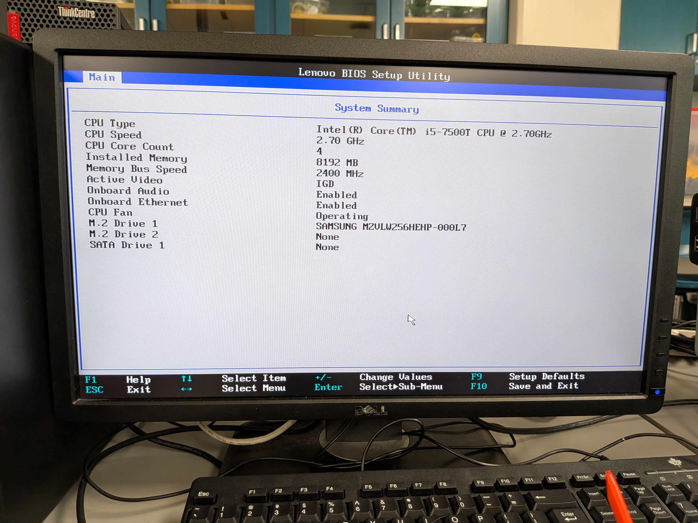
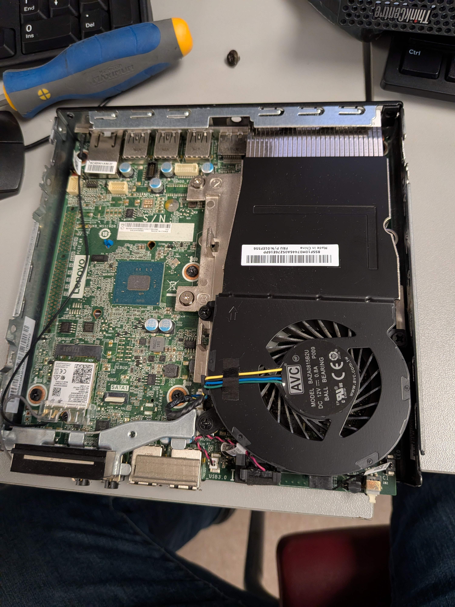
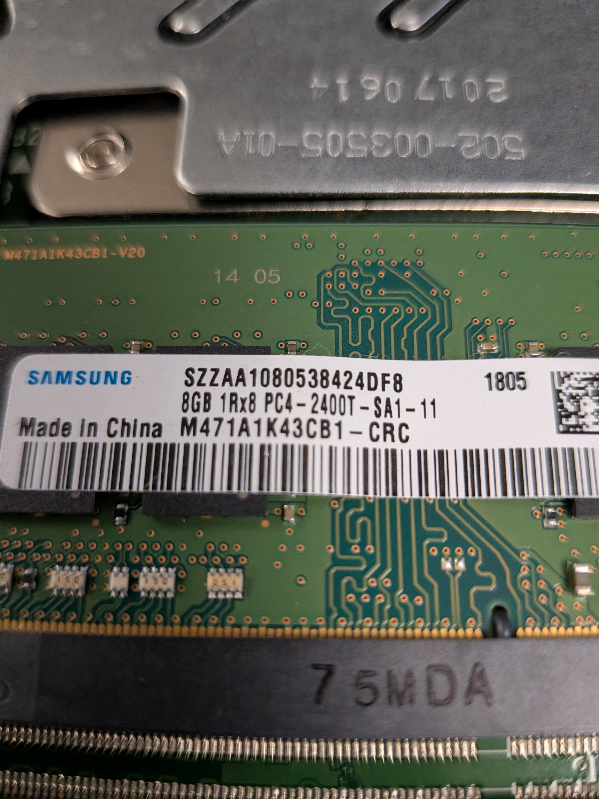

Rebooting the system after dissassembling it
Image of the motherboard

Another image of the motherboard, showing the front I/O
Image of the RAM, which is single channel DDR4 8GB

Image of task manager, on the CPU graph

Image of resource monitor
The most interesting thing in the mini PC was that the RAM and SSD were on the bottom, away from the rest of the components. I don't use Mini PCs, so I didn't see that as a common thing, as the notebooks I've opened up have everything all laid out. It was something neat to see however. The struggle was getting the command wmic baseboard get product to work, since I was by habit saying motherboard instead of baseboard and didn't catch on until much later on. The RAM on the system was very slow by modern standards, since it was one of the slowest speeds of DDR4. For reference, my laptop I bring to school is DDR5 5600, which is by numbers exponentially faster. The NVMe drive I didn't measure the speed, but assuming the age, and given the hardware would be a low end NVMe drive, which I estimate to be around 3000 MB/s total. Again for reference my school laptop is able to do close to 8,000 MB/s. The reason why a computer might feel sluggish even with a fast drive could be a multitude of reasons. One is that there is a piece of malware running in the background (i.e a Crypto miner would hog as many resources as it could), the RAM is maxed out and is forced to use the swap space (On the SSD), and if the RAM is slow, as if you have DDR4 paired with a modern gen 5 NVMe SSD (That could do around 14,000 MB/s), your RAM will end up becoming the bottleneck in this case.